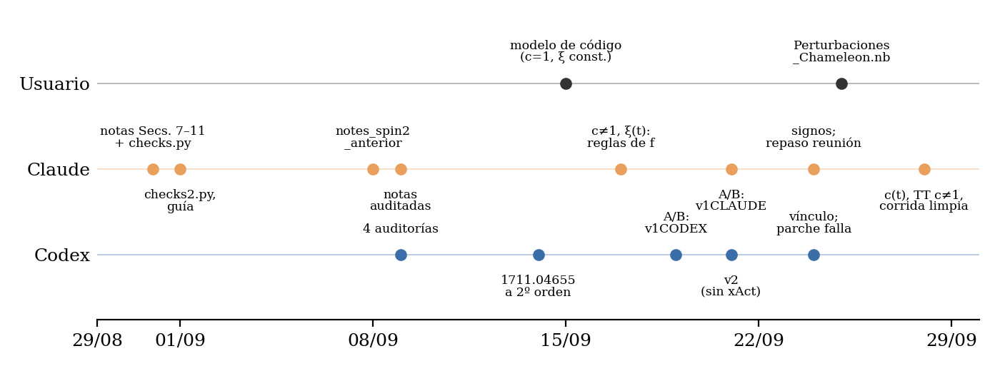
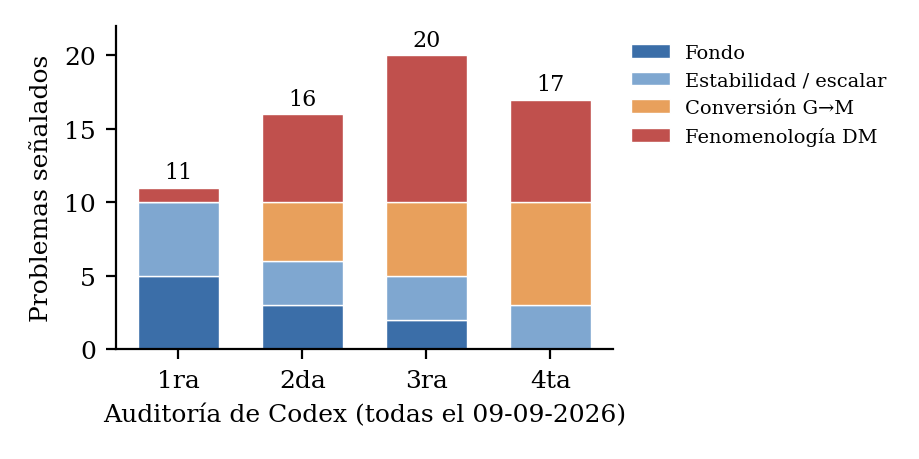

Bigravedad camaleónica y materia oscura de espín 2
Proyecto final: investigación asistida por agentes de IA (Claude Code + Codex) · Guadalupe Ahumada Acuña, DF–FCEN–UBA · septiembre 2026
¿Pueden los gravitones sin masa de la métrica \(g\) mezclarse con los de una segunda métrica dinámica \(f\) y producir partículas masivas de espín 2 que se comporten como materia oscura? Tomé un cálculo propio de bigravedad y usé dos agentes para extenderlo al caso camaleónico, \(\beta_n\to\beta_n(\phi)\), con lapso relativo \(c(t)\) y cociente de fondos \(\xi(t)\) generales. Registré de dónde sale cada resultado y lo verifiqué por un camino que no comparte código con el que lo produjo.
El modelo
Los fondos son \(ds_g^2=-dt^2+a^2d\vec x^2\) y \(ds_f^2=\xi^2(t)\,[-c^2(t)dt^2+a^2d\vec x^2]\). Mis notas de partida cubren la teoría estándar con \(c=1\) y \(\xi\) constante. La meta es el tensor de energía–momento a segundo orden en perturbaciones.
Cómo se trabajó
codigo/Perturbaciones_Chameleon.nbverificaciones/run_all.sh
Resultados, y cuánto confío en cada uno
Notación: \(J=\beta_1+2\beta_2\xi+\beta_3\xi^2\), \(Z=\beta_1+(1+c)\beta_2\xi+c\beta_3\xi^2\), \(\kappa=M_f^2/M_g^2\), \(\Delta=H-\xi H_f\).
| Resultado | Quién lo produjo | Chequeo independiente | Estado |
|---|---|---|---|
| Fondo de \(g\) y de \(f\), Klein–Gordon, conservación | yo (xPand), con la geometría de \(f\) diseñada con los agentes | rederivado desde la acción en componentes; con el signo viejo de \(\dot\rho\) el vínculo no cierra (control negativo) | verificado |
| Vínculo de Bianchi generalizado | yo · notas de Claude · 1702.04490 | las tres formas son idénticas (sympy, 7/7 PASS) | verificado |
| \(c(t)\) | yo · notas de Claude | desde la acción (Mathematica sin xAct) y dentro de mi notebook (residuo 0) | verificado |
| Sector tensorial lineal con \(c\neq1\), \(\xi(t)\), y \(m_{\rm M}^2\) | yo (EqTg) + bloque en componentes en mi notebook | derivacion_TT_general.m: 10 PASS; coincide con EqTg y con la masa de las notas | verificado |
| Vectores, no-fantasma escalar | notas de Claude; Codex rederivó 1711.04655 | 171 chequeos de Codex; Claude copió \(\kappa_1,\Sigma\) del paper | parcial |
| Materia oscura por conversión \(\mathcal G\to\mathcal M\) | sólo notas de Claude | 4 auditorías, siguen 7 problemas abiertos | no verificado |
Vínculo. Con \(\beta_n(\phi)\), la dicotomía de ramas \(J(H-\xi H_f)=0\) de la bigravedad estándar se reemplaza por un vínculo inhomogéneo. El desajuste de las tasas de Hubble lo maneja el rodamiento del camaleón, no la materia:
Sector tensorial para \(c(t)\), \(\xi(t)\) generales. El gravitón de \(f\) se propaga en el cono de luz de \(f\), y las masas cierran en \(h-\gamma\):
Con \(c\neq1\), la matriz de gradientes \(\mathrm{diag}(1,c^2)\) no conmuta con la de masas. Entonces ninguna base constante desacopla \(\mathcal G\) y \(\mathcal M\): hay un canal de mezcla \(\propto k^2(c^2-1)\), que se suma al que viene de \(\dot\theta\). Es el punto de partida del cálculo a segundo orden.
Qué aprendí sobre los agentes

- La auditoría cruzada sirve, pero no converge sola. Cada corrección trae afirmaciones nuevas.
- Copiar en lugar de derivar: un notebook de Claude carga fórmulas del paper y después "verifica" contra ellas.
- Números donde no corresponde: chequeos en una sola curva numérica; una figura de dos rectas triviales.
- Referencias inventadas en la guía de derivaciones.
- Fallas silenciosas: un parche de Codex no pasó sus propios chequeos y escribió el archivo igual.
- Lo que funcionó: darles mi código como modelo; el A/B con el mismo prompt; ceros exactos desde un kernel limpio, con controles negativos; rederivar lo importante por un camino que no comparte código; correr el notebook entero, que destapó tres defectos latentes.
Reproducir
git clone <este repo> && cd <repo>/verificaciones bash run_all.sh # ~3 min: 7/7 + 6/6 + 21/21 + 34/34 + 17/17 PASS, y el sector TT con c=1 cierra
Entorno: Python 3.12 (sympy 1.12, numpy, scipy, mpmath) y Mathematica 12.1.1 para las dos derivaciones en componentes, sin necesidad de xAct. Los notebooks usan xAct (xTensor 1.2.0, xPert 1.0.6, xPand 0.4.3).
Próximos pasos
- Sectores vectorial y escalar en mi notebook, con la \(\delta\sqrt{g^{-1}f}\) exacta (ecuación de Sylvester).
- \(T_{\mu\nu}\) a segundo orden sobre las ecuaciones tensoriales verificadas.
- Recién entonces, la conversión y la abundancia para un \(\beta_n(\phi)=\bar\beta_n e^{-\lambda\phi}\) concreto.